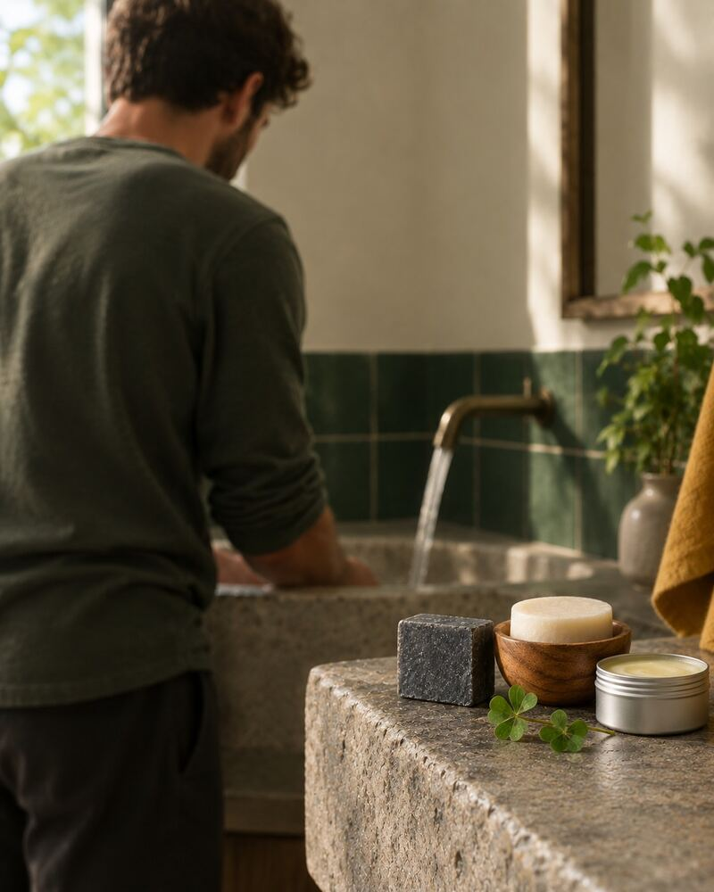
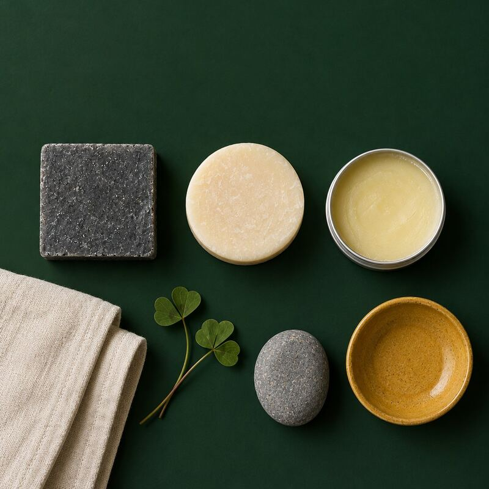

À propos
Moins de flacons, plus de soin
Oxalis est une marque lyonnaise de cosmétiques solides et rechargeables. Douze personnes, un e-shop et deux boutiques, à Lyon et à Annecy. Avec Oxalis Homme, on applique la même idée à la routine du matin : trois gestes, trois soins, rien de plus.

Pourquoi le solide
Pas de flacon
Les soins sont emballés dans du carton ou du papier.
Une boîte qui dure
Celle du baume est en aluminium et se recharge.
Moins de place
Trois soins tiennent sur un porte-savon.

Nos boutiques
Lyon
[Adresse à fournir par la marque]
Annecy
[Adresse à fournir par la marque]
Le retrait en boutique est gratuit : tu le choisis au moment de la commande.